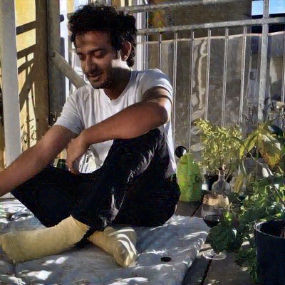

Jesus Gomez-Gardeñes
Statistical and Nonlinear Physics Universidad de ZaragozaProfessor of Physics whose research focuses on the theoretical and computational modelling of complex systems, with a strong emphasis on data-driven approaches and the analysis of collective behaviour. His work spans areas such as epidemiology, ecology, systems biology, neuroscience, and the social sciences, employing tools from statistical physics, nonlinear dynamics, network science, and big data analysis to uncover the mechanisms and interactions that drive complex real-world systems.
José F. F. Mendes
Statistical Physics Universidade de AveiroProfessor of Physics at the University of Aveiro working in statistical physics. In recent years, his work has focused on the study of complex systems and the structure and evolution of complex networks, including the World Wide Web, the Internet, and biological networks. His broader research interests also encompass granular media, self-organized criticality, non-equilibrium phase transitions, and deposition models.
Diogo Pacheco
Data Science and Misinformation University of ExeterDiogo Pacheco is a Senior Lecturer in Data Science at the University of Exeter whose research sits at the intersection of computational social science and misinformation. His work examines the cognitive and social biases that make people vulnerable to false information, and develops methods for detecting coordinated inauthentic behaviour on social media platforms. His research interests span misinformation detection, network science, and data science.
Carolina Scarton
Natural Language Processing University of SheffieldSenior Lecturer in Natural Language Processing in the Department of Computer Science at the University of Sheffield, UK. Her research focuses on Natural Language Processing (NLP), with particular interests in text adaptation, machine translation, online misinformation detection and verification, and the evaluation of NLP systems. She also explores applications of NLP in domains such as healthcare and robotics, as well as the development of dialogue systems.

Zeerak Talat
Artificial Inteligence and Media Studies University of EdinburghAssistant Professor in Responsible Machine Learning and Artificial Intelligence at the School of Informatics at the University of Edinburgh. Their research sits at the intersection of machine learning, science and technology studies, and media studies, focusing on critical perspectives on how machine learning systems can reproduce social and political power structures, and on developing alternative approaches that challenge these dynamics.
Marcelo Träsel
Media Studies Federal University of Rio Grande do SulProfessor of Cyberjournalism at the undergraduate Journalism program (Fabico/UFRGS) and in the Graduate Program in Communication at UFRGS. He has professional experience in print journalism, online media, audiovisual production, and advertising. Former president of the Brazilian Association of Investigative Journalism (Abraji).